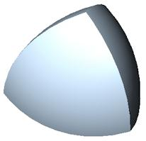
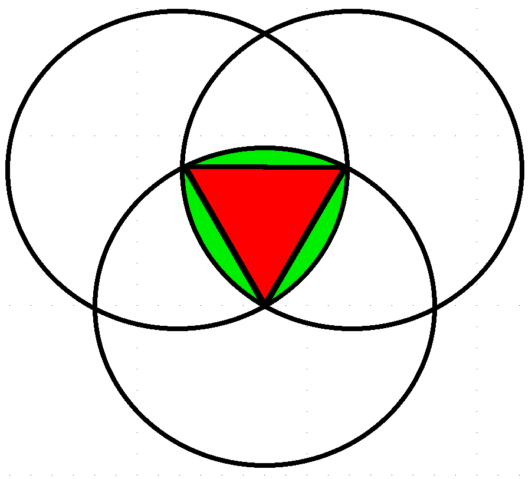
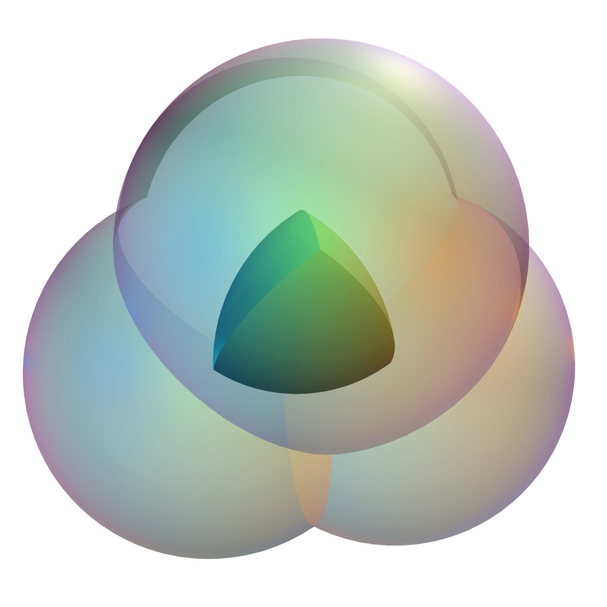
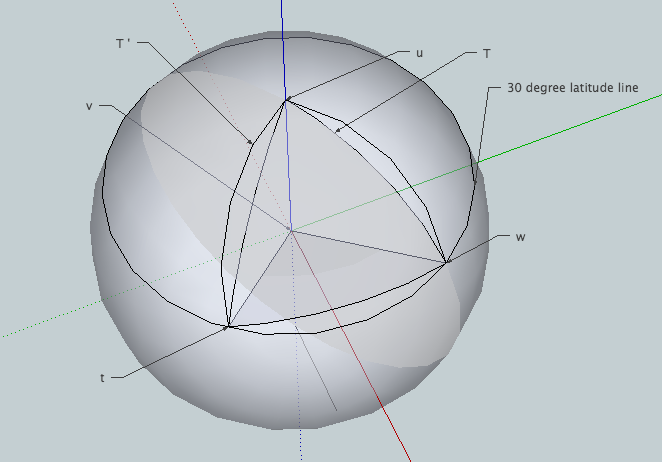
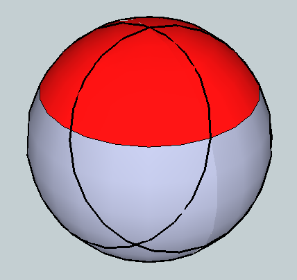
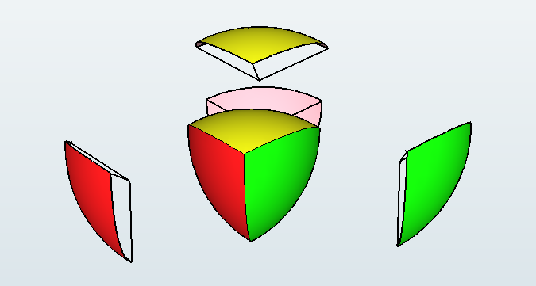
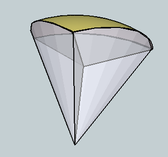
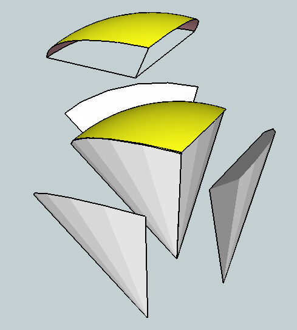
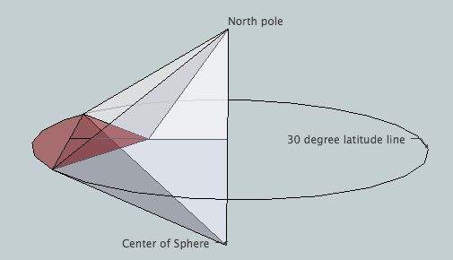

Surface area of one face: r2(2π - (9/2)cos-1(1/3))
Its volume: ((8/3)π - (27/4)cos-1(1/3)+(√2/4))r3.
A circular triangle is a plane figure resulting from a triangle whose sides have been replaced by circular arcs. A particularly special case known as a Reuleaux triangle (named after Franz Reuleaux, a German engineer from the 1800s, although the figure is much older, occurring in Gothic architecture for example; here is a window in the Hauterive Cistercian Abbey in Fribourg, Switzerland, and here is a photo inside the Eglise Notre Dame in Bruges showing another example; see the top of the windows in the background). The Reuleaux triangle (the union of the red and green regions shown in the next figure) is the specific case in which the triangle is an equilateral triangle and each arc is centered at the opposite vertex. This has the property of being a curve of constant width. Here is a page showing a rolling Reuleaux Triangle and here is one showing it rotating (and thus how a drill bit can be made to drill a nearly square hole).
It's easy to compute the area of a Reuleaux triangle. The central equilateral triangle (shown in the next figure in red) together with one of the three circular wedges (shown in green)
is a circular sector on an angle of 60 degrees, hence has area
(60/360)π r2, where r is the length of a side of the equilateral triangle. The area of the equilateral triangle is √3/4 r2, hence
each wedge has area
(60/360)π r2 - √3/4 r2,
so the Reuleaux triangle has area
3((60/360)π r2 - √3/4 r2) + √3/4 r2 =
(π/2 - 2√3/4) r2.

The 3 dimensional analogue of the Reuleaux triangle is the intersection of the interiors of 4 spherical balls of radius r, each of which goes through the centers of the other three:

The problem (as it came down to me) of finding the volume was first posed by J. Arvid Peterson, an engineer working for a Texas oilfield tool works, Gearench Manufacturing Company, probably in the 20s or 30s (the company was founded in 1927). The company logo consisted of a pair of Reuleaux triangles (as still can be seen on the company web site; the upper left of their home page has a globe with two Reuleaux triangles and below that the list of their products is superimposed on the profile of a Reuleaux triangle). Around that time, Peterson set himself the problem of constructing models of the 3 dimensional version, which (in analogy with circular triangles) he called a spherical tetrahedron. It is also nowadays called a Reuleaux tetrahedron, in analogy with a Reuleaux triangle. (This latter usage might tempt you to expect that such a spherical tetrahedron is a figure of constant width r, but in fact at its widest it has width (√3-1/√2)r = 1.025r, this being the length of the line through midpoints on opposite edges.)
Peterson cast lead models using forms made from old-fashioned toilet tank floats. He wondered how much lead he needed, and hence what was the volume of his spherical tetrahedron. Of course, not knowing was no real obstruction, but over the years he wondered. Eventually his grandson, the late John E. Maggio, became a chemistry grad student at Harvard. Peterson figured his grandson might be able to do what he hadn't, so he gave John one of his models and asked him to figure out what the volume was. Given that John's expertise was chemistry, he promptly dunked it in a beaker of water and discovered its volume was quite close to (if not exactly equal to) (4π /30)r3; i.e., one tenth the volume of one of the four spheres of which it is the intersection.
In addition to wanting to give his grandfather an answer, John was intrigued by his experimental result and wanted to know if it was exact, so he mentioned the problem to friends and colleagues around Harvard and would lend the model to anyone who would work on the problem. One of these was an undergraduate Harvard math major named Barbara Peskin. When Barb moved on to grad school at MIT (in 1976 or so) the model went with her and so did the problem. Both the model and the problem floated around MIT for a while, occasionally being the subject of math competitions at MIT, but no correct solutions were found. Most attempts involved trying to do a complicated multiple integral. It turns out it's possible to do it this way (see Eric Weisstein's impressive solution), but it's pretty challenging to carry it through.
Eventually (around 1980 or so) the model ended up on my desk. Doing the integral seemed to be too much work, so I posed myself the problem of finding the surface area. It turns out this can be computed by relatively elementary means, but I first did it following a suggestion of Allan Adler (at that time an Assistant Professor at Brandeis) of applying the theorem of Gauss-Bonnet.
What the theorem says is:
∫∫RKGdS + ∫Bkgds + ∑i(π -θi)=2π χ(R),
i.e., given a surface region R with boundary B and corners enumerated by i, then
2π times the Euler characteristic χ(R) is the integral of the
Gaussian curvature KG over the surface, plus the line integral on B
of the geodesic curvature kg (which is the component tangent to R
of the acceleration of a particle moving on the boundary with unit
speed), plus the sum of the complements of the interior angles θi at the corners.
Each face of the spherical tetrahedron is simply connected
(so χ(R) = 1), a sphere of radius r has KG = 1/r2, each segment
of the boundary is a circular arc (which we can take to be
an arc on the 30 degree latitude line of the sphere which thus has
radius (√3/2)r, through an angle equal to the dihedral angle
of a regular tetrahedron, hence the angle is cos-1(1/3)=2tan-1(1/√2) = 70.52 degrees) so we find kg = 1/(√3r), and a little geometry shows that
θi = 2(π /2-2tan-1(1/√2)+2tan-1(1/√2) =
π - 2tan-1(1/√2),
so the complement is
2tan-1(1/√2) which is the same as cos-1(1/3).
Substituting into Gauss-Bonnet gives:
A/r2 + 3(1/(√3r))((√3/2)r)cos-1(1/3) + 3cos-1(1/3) = 2π
and solving for the area A of one face of the spherical tetrahedron one obtains:
A = r2(2π - (9/2)cos-1(1/3)).
For a more elementary determination of A, note that R is a ``Reuleaux spherical triangle,''
denoted T' in the next figure; i.e., T' is a ``circular spherical triangle'' obtained by intersecting three circles
of equal radius on the sphere, each of which goes through the centers of the other two. (A spherical triangle is a triangle on the sphere whose sides are arcs of great circles. Thus a
circular spherical triangle is what one gets when circular arcs replace the great circle sides.) To help visualization, start with a regular tetrahedron of side length r. One vertex (call it v) is placed at the center of the sphere, another at the North pole (call it u for up say). Then the other two vertices (t and w) will lie on the 30 degree latitude line, separated by a chordal distance of r. One edge of R lies on this latitude line. The other two edges come from sliding this latitude line around to be centered on t and w. The vertices t, w and u also determine a spherical triangle T. Since great circles are geodesics, T is contained inside T', as shown in the diagram:

Now mimic exactly what one does to find the area of an actual Reuleaux triangle. It is not hard to find the area on or above the 30 degree latitude line on the sphere (this is the red cap in the diagram below); it is one half the area of the northern hemisphere (i.e., one half of 2π r2 so π r2).

Note that two of the sides of T (the two meeting at u) are longitude lines on our sphere, separated by an angle equal to the dihedral angle of the two corresponding sides of the tetrahedron (and hence equal to cos-1(1/3) in radians). The area of T plus the wedge between T' and T along the third side is thus the region bounded by the 30 degree latitude line and the two longitude lines, hence is the fraction cos-1(1/3)/(2π ) of the area in red in the figure above; i.e., the area is cos-1(1/3)/(2π )π r2 = (cos-1(1/3)/2)r2. The area of T is given by the spherical excess formula (i.e., the sum of the interior angles of T minus π, all times r2, which one can get from Gauss-Bonnet but which in fact is much older), hence T has area (3cos-1(1/3)-π )r2 so we get ((cos-1(1/3)/2)-(3cos-1(1/3)-π ))r2 for the area of one wedge and hence 3 times that plus the area of T for the area of T', which again gives r2(2π - (9/2)cos-1(1/3)) for the area of T', which is just one of the four faces of the spherical tetrahedron.
Now the problem is to obtain the volume from the area. The volume we want decomposes into four pieces, each piece P being the convex hull of the centroid and one face (i.e., each piece is the space between the center of mass of our spherical tetrahedron (or equivalently of the rectilinear tetrahedron itself) and a given face).
Here is an exploded view:

These figures P are not spherical sectors since the center of mass of the tetrahedron is not the center of the sphere. But since we know the area of a face, we know the volume of the convex hull of the face and the center of the sphere the face lies on, since this is just a spherical cone, so the volume is
(A/(4π r2))(4/3)π r3
or (1/3)Ar (even though the base is on the sphere, this is just the usual formula for the volume of a cone: 1/3 base times height). Here is an x-ray view of this cone followed by an exploded view of the same thing:
 
The volume we want is that of P. If we remove P from this cone what's left (as shown in the exploded view above) is the union of three congruent pieces, each of which is a cone itself (an actual cone with a flat base).
The figure below shows this cone; it is the convex hull of the point marked as ``North Pole" (this point is the apex of the cone) and the plane region colored in red (which is the base of the cone, consisting of the join of the centroid of the tetrahedron and a circular arc on the 30 degree latitude line, which arc is subtended by the dihedral angle of
two sides of the tetrahedron, the vertex of this angle being the midpoint of the edge of the tetrahedron opposite the arc).
The altitude of the cone is half the side of the tetrahedron (hence r/2):

It is easy using plane geometry to see the area of the red base is
(1/8)(3cos-1(1/3)-√2)r2,
hence the volume of the cone is
(1/3)(1/2)(1/8)(3cos-1(1/3)-√2)r3.
Subtracting 3 of these from our spherical sector gives
P, hence the volume of P is
((1/3)(2π - (9/2)cos-1(1/3))-3(1/3)(1/2)(1/8)(3cos-1(1/3)-√2))r3.
Multiplying by 4 and simplifying gives the volume of the spherical tetrahedron:
V = ((8/3)π - (27/4)cos-1(1/3)+(√2/4))r3.
This is 0.422157733r3, compared with (4π /30)r3 = 0.418879020r3 which John found experimentally (an error of only 0.9%, not bad given that the model was only about 4 inches across).
Although it was fun to use Gauss-Bonnet, it is interesting to note that essentially no use of calculus was needed, with the possible exception of the fact that the area on a sphere above 30 degrees latitude is half the area of the hemisphere. This plus the spherical excess formula for the area of a spherical triangle are really all that's needed beyond standard high school geometry. And I say ``possible exception'' above since maybe the fact about the area above 30 degrees latitude can be gotten without calculus; after all, the ancient Egyptians knew that a hemisphere has twice the area of its equatorial circle (yet remarkably they did not have an exact formula for the area of the circle itself!).
All of the graphics appearing above (excluding the first two and not including the ones you have to link to by clicking) were composed in Google's SketchUp, and are available as 3D models from Google's 3D Warehouse. Running them on your own computer is much more satisfactory than what you see embedded here.
The second referee report was very short. Here it is: ``This result is correct, and is an appealing (but very elementary) application of the Gauss-Bonnet theorem. Maybe it's a little too elementary for the Monthly; I suspect that if I gave it to students in my undergraduate differential geometry class as an application of Gauss-Bonnet, about half of the class would get it. (I leave it for you to judge whether this makes it too elementary.) One concrete suggestion I would make is ask the author to supply a three-dimensional picture of the spherical tetrahedron.'' [Here I interject that I did, but perhaps it was not conveyed by the editor.]
What I thought was interesting about this problem and my solution was that by an unexpected (as I saw it) use of a beautiful theorem in pure mathematics (together with a not-at-all obvious use of the area to find the volume) one could give a simple conceptual and explicit solution to an otherwise very challenging practical problem (``challenging" as evidenced by the efforts of the Harvard and MIT students who tried and failed). While neither referee seemed to give much weight to the conceptual aspects of the solution which is what I thought made it interesting, this is especially clear with the second referee, who ``suspects'' that [only!] half of his class would get it, even after he tells them how to do it!
Ah well. It was an early lesson about peer review. One doesn't always agree with the referees. At least they read my submission (the first one found a misspelling). As a moral for those who read this who are just beginning their careers, try to be fair and not needlessly critical or flippant if you're a referee, an editor or a reviewer, and keep in mind that you won't always get it right. It's good to keep this in mind even when you're the author: Take what you can from the comments you find useful (for example my exposition above certainly is more detailed with better graphics than what I sent in to the Monthly) and ignore the rest.
In any case, I was pleased with the solution, as were the people who I shared it with in person. I used it as the basis of a talk for my first job interview, at Williams (and got an offer out of it!) and I'm going to use it again for an undergraduate talk in a couple of weeks (which is what prompted me to post this now, 30 years later). My then PhD adviser, Mike Artin, also seemed to like it, and hectored me (good naturedly) for a couple of years about writing it up and sending it somewhere (hence the ill-fated submission to the Monthly). A more important reason for writing it up was that John thought his grandfather might get a kick out of seeing his name in print (and since he was then in his 90s, it was best not to put it off too long). Unfortunately it never did get into print, but John was happy to finally know the exact volume. In fact, before Barb left for her post-doc at Illinois and John for his in the ``other'' Cambridge (in the spring of either 1980 or 81), John treated Barb, Allan and me to lunch at Grendel's near Harvard Square to celebrate the solution. So in addition to the satisfaction of having figured out a challenging problem and learning about Gauss-Bonnet along the way, my reward was a good meal with friends. For an impecunious grad student, that was hard to beat!
{kind=link}
{kind=link}
{kind=link}